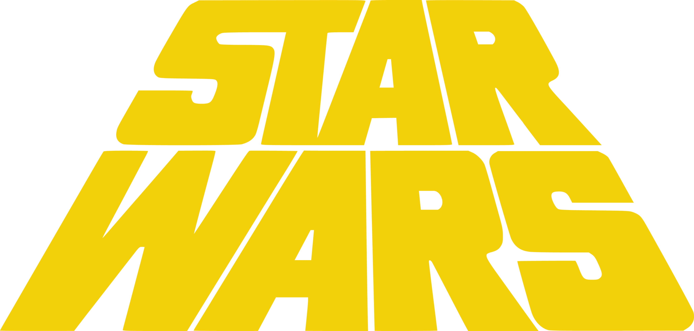

Tunisia, 1976 — the twin suns

Elstree Studios — the practical build

ILM Van Nuys — inventing the future

The movie nobody believed would work — not Fox, not the cast, not even its director. George Lucas had a breakdown in the editing room. The studio tried to kill it. And then it changed everything.
George Lucas didn't want to make a Star Wars sequel. He wanted to make THX 1138 and American Graffiti — and after Graffiti was a hit, he could have made anything. He chose to build a universe. Nobody thought that was a good idea.
Lucas began writing a treatment called "The Star Wars" — a sprawling, myth-forward space opera drawing from Akira Kurosawa's The Hidden Fortress, Joseph Campbell's hero cycles, and Flash Gordon serials. It was incoherent. It was also unlike anything in American cinema.
Lucas's nostalgia piece cost $777,000 and made $140 million. It gave him leverage — but not as much as he thought. The Hollywood gatekeepers saw a director of small, personal films. They didn't see the builder of empires he was about to become.
Universal passed. United Artists passed. The script was too weird, too dense, too mythological. Fox only said yes because Alan Ladd Jr. personally championed it — and because he didn't fully understand what he was agreeing to. Neither did anyone else.
Fox gave Lucas a modest directing fee and he gave back some of it in exchange for sequel rights and all merchandising rights. The studio laughed. No one had ever done that before — because no one had imagined merchandise could matter. Within two years, it was the most valuable concession in Hollywood history.
Filming in Tunisia and Elstree Studios was a daily exercise in failure. The robots didn't work. The cast thought it was ridiculous. Lucas was so stressed he developed hypertension. The special effects department didn't exist yet — he had to invent it.
No special effects house could build what Lucas needed, so he built his own. ILM started in a Van Nuys warehouse with a team of young unknowns and a mandate to solve problems that had never been problems before. The tools they invented for A New Hope became the foundation of the entire visual effects industry.
Location shooting in Tunisia was a catastrophe. Sand clogged the droids. The remote-controlled R2-D2 kept driving off in the wrong direction. A rainstorm hit a region that hadn't seen rain in years. Lucas later said he felt he was watching his film fall apart in real time — and he couldn't stop it.
The cast humored the material politely. Alec Guinness privately found it juvenile. Harrison Ford, who wasn't even cast until the last minute, thought Lucas was soft-spoken to the point of ineffectiveness. Carrie Fisher was 19, newly famous, and surrounded by skeptics. They all showed up anyway. That matters more than enthusiasm.
The first assembly cut was a disaster. Lucas watched it in silence, thanked everyone, and went home. He and Marcia Lucas rebuilt the film in the editing room — tightening, restructuring, saving sequences that were dead on arrival. Lucas developed hypertension during production and believed, genuinely, that the film would be a failure.
A New Hope opened in 32 theaters. Lines wrapped around the block. Within a week it had expanded to 43 theaters. Within a month, it was everywhere. What Fox thought was a children's movie had turned into a cultural event that nobody had a name for yet.
Star Wars opened in 32 theaters — a limited release by any standard. By the end of the first week it had become the highest single-week gross in the history of cinema. People weren't watching a movie. They were having a shared experience that cinema hadn't been able to manufacture in years.
Lucas initially cut the film to classical recordings — temp tracks from Holst, Dvorak, and Walton. Williams had to write something that could replace music audiences already loved. He did more than that. The Star Wars theme became the most recognizable piece of film music since Psycho. It made orchestral scores relevant again.
Jaws in 1975 had proved you could open wide and build urgency. Star Wars perfected it. The summer blockbuster became Hollywood's dominant commercial logic — and studios spent the next 40 years chasing that opening weekend feeling. For better and for worse, this film made the event movie the center of cinema economics.
Kenner couldn't manufacture toys fast enough. They sold IOUs — empty boxes promising toys that hadn't been made yet. Parents waited in line for plastic figurines of characters from a movie they hadn't seen. The toy aisle had never been a battleground before. Now it was the front line of a war for children's imaginations that hasn't ended.
A New Hope wasn't a film — it was an opening statement. Lucas used the revenue and the leverage to build what no director had built before: a self-sustaining mythology with its own rules, language, and economy. Hollywood watched and immediately began misunderstanding why it worked.
Before The Empire Strikes Back, the Star Wars universe was already expanding. Marvel Comics launched a tie-in series. Radio dramas aired on NPR. Novelizations preceded sequels. Lucas had accidentally invented transmedia storytelling — the idea that a fictional world could live simultaneously in multiple formats without any one of them being definitive.
CBS aired the Star Wars Holiday Special to an audience of 13 million viewers. Lucas had almost no creative control. Bea Arthur sang in the Mos Eisley Cantina. Wookiees spent 10 minutes growling without subtitles. Lucas later said he wanted to track down every copy and destroy it. That it still exists is proof that some things survive their creators.
Irvin Kershner directed. Lawrence Kasdan wrote. Lucas produced but stayed off set. Empire was darker, stranger, and structurally more ambitious than A New Hope — and it proved that the universe Lucas had built could support stories that weren't just adventures. It was the first time a franchise sequel had surpassed the original on every critical measure.
Return of the Jedi completed the trilogy but showed the machine straining. Ewoks were designed to sell toys. The Death Star plot recycled the original. Lucas was producing rather than directing, and the distance showed. The film worked as a conclusion but felt like a corporation's idea of a Lucas film rather than the thing itself.

Lucas spent two decades going back into his own work. The Special Editions changed effects, altered scenes, added new footage. Fans revolted. Lucas insisted the revised versions were the definitive ones. The argument became the most intense ongoing debate about authorship and audience in popular culture.
For the 20th anniversary, Lucas released revised versions of all three films. New CGI environments replaced matte paintings. Creatures were added to Mos Eisley. Jabba the Hutt appeared in a scene cut from the original. Some additions improved the scope. Others replaced practical effects with digital versions that aged poorly. The originals were no longer commercially available.
The prequel trilogy — Phantom Menace, Attack of the Clones, Revenge of the Sith — were visually ambitious and narratively uneven. They divided the fanbase permanently. What they proved, inadvertently, was that A New Hope's power came from its constraints: the limited budget, the analog effects, the actors reacting to things that weren't there yet. Remove the limits and something essential evaporates.
Lucas sold Lucasfilm to Disney. He later said he felt like he'd sold his children. Disney inherited the most valuable entertainment franchise in history and immediately announced a sequel trilogy. The question became whether a corporate structure could protect the things that made Star Wars matter — or whether it would mistake the iconography for the substance.
J.J. Abrams's The Force Awakens was structurally almost identical to A New Hope — orphan with mysterious powers, desert planet, superweapon, mentor dies. Critics called it a safe crowd-pleaser. Fans embraced it. The real question it raised was whether Star Wars could ever be more than a delivery mechanism for nostalgia, or whether the original film had created needs it was never designed to satisfy.
Luke Skywalker stands at the edge of the Lars homestead and watches two suns set over the desert. John Williams plays. Nothing is said. The entire mythology — the longing, the smallness, the immensity of what's possible — is compressed into thirty seconds of a young man looking at something beautiful and knowing he needs to leave. It is the most efficient piece of storytelling in the trilogy. Possibly in the franchise. It works because Lucas didn't explain it.


Lucas built a mythology from scraps of myth cycles, samurai films, and Saturday serials — then built a company to protect it. His willingness to negotiate for merchandise rights was the most consequential deal in entertainment history.
Wikipedia
Ford was working as a carpenter when Lucas cast him. He brought Han Solo a skepticism the script didn't quite write — a man who has seen enough of the galaxy to know it doesn't care about destiny. His improvised "I know" became the franchise's defining line.
Wikipedia
Fisher was 19 during filming and brought Leia an authority the character's rank implied but the script didn't always earn. She became the franchise's moral center: the one character who never doubted the mission even when everyone around her did.
Wikipedia
Hamill made Luke's naivety a feature, not a deficiency. The hero's journey only works if the audience believes the hero has somewhere to go. His performance in the binary sunset scene — communicating longing without dialogue — is the film's emotional core.
Wikipedia
Guinness lent the film legitimacy it couldn't have bought. He privately dismissed Star Wars as a children's fantasy — yet played Obi-Wan with enough gravity to make the mythology feel earned. He negotiated for a percentage of the film's gross and earned more than £4 million. He complained about it for the rest of his life.
Wikipedia
Williams wrote a score that treated a science fiction film as a grand romantic epic — and in doing so, made it one. The main theme, the Force theme, the Imperial March (in Empire): each piece of music does narrative work. His instinct to reject electronic abstraction in favor of full orchestra changed the sound of Hollywood.
Wikipedia
McQuarrie's pre-production paintings convinced Fox to greenlight Star Wars. His visual language — the weathered machines, the alien sunsets, the masked villain — became the aesthetic DNA of the entire franchise. He designed Darth Vader, R2-D2, and C-3PO. He gave a screenplay a world to live in.
Wikipedia
Marcia Lucas — George's wife at the time — co-edited the film and won the Academy Award for it. She is the person most responsible for the film's emotional coherence. When the first assembly cut was a disaster, she and Richard Chew rebuilt it. The version audiences loved is largely the version she saved.
Wikipedia
Every other studio had said no. Ladd said yes — not because he fully understood the film, but because he trusted Lucas after American Graffiti. That act of institutional faith changed the history of cinema. He was pushed out of Fox shortly after the film's success. Hollywood has always had trouble honoring the people who took the right risk.
Wikipedia
Dykstra built the Dykstraflex — a motion-controlled camera system that allowed the same movement to be repeated identically across multiple passes. It made the space battle sequences possible. It was the technical breakthrough that legitimized ILM and established visual effects as a creative discipline rather than a trick.
WikipediaStar Wars is the most valuable entertainment franchise ever built. It is also a franchise in search of a reason to exist beyond nostalgia. The question A New Hope never had to answer — what are you actually about, now that the Empire is gone — is the one Disney has been failing to answer for a decade.
The most emotionally effective Star Wars storytelling since the original trilogy came from a TV show built around a bounty hunter and a small green creature who never speaks. The Mandalorian proved that the franchise's best instinct is restraint — less mythology, more character. Whether the theatrical return sustains that lesson remains the central bet.
The first announced New Jedi Order film — set to follow Daisy Ridley's Rey — represents Disney's commitment to continuing the sequel trilogy's story. The choice of director signals a deliberate break from franchise autopilot. Whether the post-Skywalker saga Star Wars can find new mythological ground without retreating to familiar shapes is the franchise's defining creative challenge.
The original unaltered 1977 cut of Star Wars is not commercially available. Lucas's revisions have been the legally definitive version since 1997. A generation has grown up with the Special Editions. The film that changed cinema exists in an authenticated form only in private archives and aging theatrical prints — a strange fate for the most influential movie of the 20th century.
George Lucas built a world that will outlast him by centuries. The question — which he never had to answer because he sold it before it became urgent — is whether a mythology can survive indefinitely without a central creative intelligence. Disney has resources. It has IP. It does not have a George Lucas. That gap is the franchise's permanent condition.
When the lights came up in 32 theaters on May 25, 1977, nobody had a word for what they had just seen. The closest anyone could manage was: it felt like a fairy tale — but bigger, faster, louder. George Lucas had a breakdown making it. Fox thought it was a children's film at best. The cast showed up and did their jobs without conviction. And somehow, out of that doubt, came the most commercially successful piece of cinema ever made. A New Hope mattered not because it was flawless — it wasn't — but because it believed in something simple: that the universe has a structure, and that ordinary people are capable of changing it. That is still the most subversive idea in Hollywood.
How a movie nobody believed in — not the studio, not the cast, not even its director — became the most commercially successful piece of cinema ever made and invented the blockbuster era.